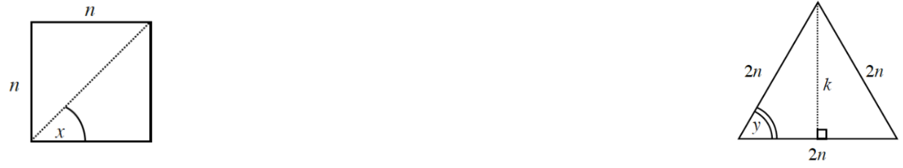

.figure-full image option. Homework Help text omitted. Code comments included for easier editing.Andreas, the managing artist for the Mathematical Broadcasting Company (MBC), is designing a new logo for its on-screen mascot. Since you are working as his assistant, he has given you the task of labeling the radian measures for all of the marked angles around the curved perimeter on the semicircular design he has created. He has already labeled \(0\) and \(\pi\) for you. Sketch the diagram and label all of the distances from \(0\) along the semicircle in terms of \(\pi\). Write your results as simplified fractions.
Change the following degree measures to radians. Use exact values.
\(120º\)
\(-225º\)
\(80°\)
Let \(g ( x ) = \left\{ \begin{array} { l l } { 3 + x ^ { 2 } } & { \text { if } x < - 2 } \\ { 2 x } & { \text { if } - 2 \leq x < 1 } \\ { 11 - x ^ { 2 } } & { \text { if } \quad x \geq 1 } \end{array} \right.\). Evaluate:
\(g(3)\)
\(g(-1)\)
\(g(-2)\)
\(g(4)\)
Given \(f(x)=x^2+1\), \(g(x)=2x-8\), and \(h(x)=\frac{1}{2}x+1\). Write an equation for each of the following operations.
\(f(x)+g(x)\)
\(g(x)h(x)\)
\(g(h(x))\)
\(f(f(x))\)
Rewrite each expression using the properties of exponents.
\((2^2)^x\)
\((2^{-5})^4\)
\(\left(\frac{2}{3}\right)^{-1}\)
\(\left(\frac{2}{3}\right)^{-2}\)
Solve for \(y\): \(5x+2y=ky+9\)
Use the Pythagorean Theorem and the diagrams below to answer the following questions.
Square with top & left sides labeled, n, with dashed diagonal from lower left to upper right vertex. Angle between diagonal & bottom side, labeled, x.
Triangle, with dashed segment from top vertex, perpendicular to bottom side, labeled, k, Each side of triangle labeled, 2, N. Bottom left angle labeled, y.
The square at right has sides of length \(n\). What is the length of the diagonal in terms of \(n\)? Use exact values.
What is the measure of the angle labeled \(x\)?
The triangle at right is equilateral with each with sides of length \(2n\). What is the height \((k)\) in terms of \(n\)? Use exact values.
What is the measure of the angle labeled \(y\)?
